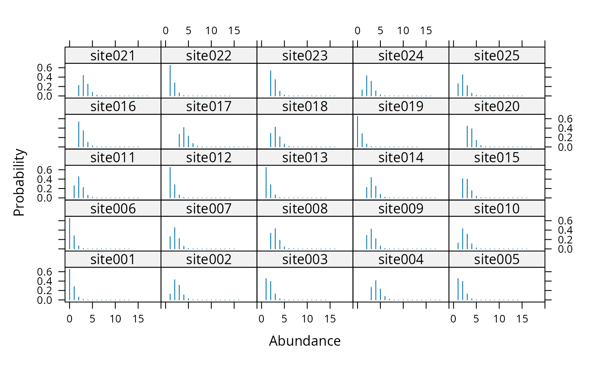

gmultmix.RdA three level hierarchical model for designs involving repeated counts that yield multinomial outcomes. Possible data collection methods include repeated removal sampling and double observer sampling. The three model parameters are abundance, availability, and detection probability.
Righthand side (RHS) formula describing abundance covariates
RHS formula describing availability covariates
RHS formula describing detection covariates
An object of class unmarkedFrameGMM
Either "P", "NB", or "ZIP" for the Poisson, negative binomial, or zero-inflated Poisson models of abundance
The upper bound of integration
Starting values
Optimization method used by optim
Logical. Should standard errors be calculated?
Either "C" to use fast C++ code or "R" to use native R code during the optimization.
Set the number of threads to use for optimization in C++, if
OpenMP is available on your system. Increasing the number of threads
may speed up optimization in some cases by running the likelihood
calculation in parallel. If threads=1 (the default), OpenMP is disabled.
Additional arguments to optim, such as lower and upper bounds
The latent transect-level super-population abundance distribution
\(f(M | \mathbf{\theta})\) can be set as a
Poisson, negative binomial, or zero-inflated Poisson random variable,
depending on the setting of the mixture argument.
mixture = "P", mixture = "NB", and mixture = "ZIP"
select the Poisson, negative binomial, and zero-inflated Poisson distributions
respectively. The mean of \(M_i\) is \(\lambda_i\).
If \(M_i \sim NB\), then an additional parameter, \(\alpha\),
describes dispersion (lower \(\alpha\) implies higher variance). If
\(M_i \sim ZIP\), then an additional zero-inflation parameter
\(\psi\) is estimated.
The number of individuals available for detection at time j is a modeled as binomial: \(N_{ij} \sim Binomial(M_i, \mathbf{\phi_{ij}})\).
The detection process is modeled as multinomial: \(\mathbf{y_{it}} \sim Multinomial(N_{it}, \pi_{it})\), where \(\pi_{ijt}\) is the multinomial cell probability for plot i at time t on occasion j.
Cell probabilities are computed via a user-defined function related to the
sampling design. Alternatively, the default functions
removalPiFun
or doublePiFun can be used for equal-interval removal
sampling or
double observer sampling. Note that the function for computing cell
probabilites
is specified when setting up the data using unmarkedFrameGMM.
Parameters \(\lambda\), \(\phi\) and \(p\) can be modeled as linear functions of covariates using the log, logit and logit links respectively.
An object of class unmarkedFitGMM.
Royle, J. A. (2004) Generalized estimators of avian abundance from count survey data. Animal Biodiversity and Conservation 27, pp. 375–386.
Chandler, R. B., J. A. Royle, and D. I. King. 2011. Inference about density and temporary emigration in unmarked populations. Ecology 92:1429-1435.
In the case where availability for detection is due to random temporary emigration, population density at time j, D(i,j), can be estimated by N(i,j)/plotArea.
This model is also applicable to sampling designs in which the local population size is closed during the J repeated counts, and availability is related to factors such as the probability of vocalizing. In this case, density can be estimated by M(i)/plotArea.
If availability is a function of both temporary emigration and other processess such as song rate, then density cannot be directly estimated, but inference about the super-population size, M(i), is possible.
Three types of covariates can be supplied, site-level,
site-by-year-level, and observation-level. These must be formatted
correctly when organizing the data with unmarkedFrameGPC
unmarkedFrameGMM for setting up the data and metadata.
multinomPois for surveys where no secondary sampling periods were
used. Example functions to calculate multinomial cell probabilities are
described piFuns
# Simulate data using the multinomial-Poisson model with a
# repeated constant-interval removal design.
n <- 100 # number of sites
T <- 4 # number of primary periods
J <- 3 # number of secondary periods
lam <- 3
phi <- 0.5
p <- 0.3
#set.seed(26)
y <- array(NA, c(n, T, J))
M <- rpois(n, lam) # Local population size
N <- matrix(NA, n, T) # Individuals available for detection
for(i in 1:n) {
N[i,] <- rbinom(T, M[i], phi)
y[i,,1] <- rbinom(T, N[i,], p) # Observe some
Nleft1 <- N[i,] - y[i,,1] # Remove them
y[i,,2] <- rbinom(T, Nleft1, p) # ...
Nleft2 <- Nleft1 - y[i,,2]
y[i,,3] <- rbinom(T, Nleft2, p)
}
y.ijt <- cbind(y[,1,], y[,2,], y[,3,], y[,4,])
umf1 <- unmarkedFrameGMM(y=y.ijt, numPrimary=T, type="removal")
(m1 <- gmultmix(~1, ~1, ~1, data=umf1, K=30))
#>
#> Call:
#> gmultmix(lambdaformula = ~1, phiformula = ~1, pformula = ~1,
#> data = umf1, K = 30)
#>
#> Abundance:
#> Estimate SE z P(>|z|)
#> 0.943 0.135 6.99 2.71e-12
#>
#> Availability:
#> Estimate SE z P(>|z|)
#> 0.422 0.464 0.909 0.364
#>
#> Detection:
#> Estimate SE z P(>|z|)
#> -1.05 0.251 -4.17 3.04e-05
#>
#> AIC: 1538.859
backTransform(m1, type="lambda") # Individuals per plot
#> Backtransformed linear combination(s) of Abundance estimate(s)
#>
#> Estimate SE LinComb (Intercept)
#> 2.57 0.346 0.943 1
#>
#> Transformation: exp
backTransform(m1, type="phi") # Probability of being avilable
#> Backtransformed linear combination(s) of Availability estimate(s)
#>
#> Estimate SE LinComb (Intercept)
#> 0.604 0.111 0.422 1
#>
#> Transformation: logistic
(p <- backTransform(m1, type="det")) # Probability of detection
#> Backtransformed linear combination(s) of Detection estimate(s)
#>
#> Estimate SE LinComb (Intercept)
#> 0.26 0.0482 -1.05 1
#>
#> Transformation: logistic
p <- coef(p)
# Multinomial cell probabilities under removal design
c(p, (1-p) * p, (1-p)^2 * p)
#> [1] 0.2600816 0.1924392 0.1423893
# Or more generally:
head(getP(m1))
#> [,1] [,2] [,3] [,4] [,5] [,6] [,7]
#> [1,] 0.2600816 0.1924392 0.1423893 0.2600816 0.1924392 0.1423893 0.2600816
#> [2,] 0.2600816 0.1924392 0.1423893 0.2600816 0.1924392 0.1423893 0.2600816
#> [3,] 0.2600816 0.1924392 0.1423893 0.2600816 0.1924392 0.1423893 0.2600816
#> [4,] 0.2600816 0.1924392 0.1423893 0.2600816 0.1924392 0.1423893 0.2600816
#> [5,] 0.2600816 0.1924392 0.1423893 0.2600816 0.1924392 0.1423893 0.2600816
#> [6,] 0.2600816 0.1924392 0.1423893 0.2600816 0.1924392 0.1423893 0.2600816
#> [,8] [,9] [,10] [,11] [,12]
#> [1,] 0.1924392 0.1423893 0.2600816 0.1924392 0.1423893
#> [2,] 0.1924392 0.1423893 0.2600816 0.1924392 0.1423893
#> [3,] 0.1924392 0.1423893 0.2600816 0.1924392 0.1423893
#> [4,] 0.1924392 0.1423893 0.2600816 0.1924392 0.1423893
#> [5,] 0.1924392 0.1423893 0.2600816 0.1924392 0.1423893
#> [6,] 0.1924392 0.1423893 0.2600816 0.1924392 0.1423893
# Empirical Bayes estimates of super-population size
re <- ranef(m1)
plot(re, layout=c(5,5), xlim=c(-1,20), subset=site%in%1:25)
